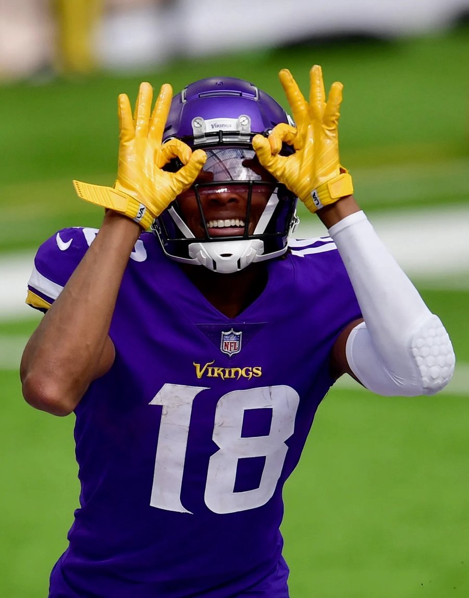

My Favorite Jerseys


My Favorite Players

Justin Jefferson
The 28-year-old receiver was drafted in 2020 and has quickly become the current BEST wide receiver in the league. He is the quickest to hit 8,500 yards in his career and is on pace to be the first to 10,000. He is my all-time favorite player and is the reason I fell in love with football.
587 REC | 8,572 YDS | 44 TD
4x Pro Bowl | 2x First-Team All-Pro | 2022 OPOY

Harrison Smith
His nickname is "Hit Man," and he plays safety. He is still active after being drafted in 2012. He has played for the Minnesota Vikings his whole career and has been a cornerstone of their defense. He is undoubtedly (in my opinion) in conversation to be one of the best safeties in NFL history, easily top 5.
1,182 TKL | 39 INT | 21.5 SCK | 13 FF | 108 PD
6x Pro Bowl | 1x First-Team All-Pro